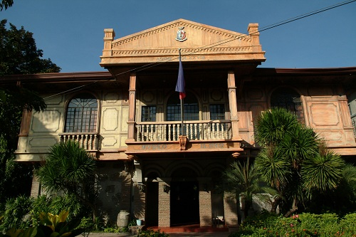

ABOUT
A Great Place to be
La Union is a province in the Philippines located in the Ilocos Region in the island of Luzon. it is known for its wonderful beaches, tourist spots, and great people. Today, La Union asserts its position as the “Heart of Agri-Tourism in Northern Luzon by 2025” because of its major potentials in the fields of Agriculture and Tourism.
History
The region was first inhabited by the aboriginal Negritos, before they were pushed by successive waves of Austronesian immigrants that penetrated the narrow coast. Tingguians in the interior, Ilocanos in the north, Pangasinans in the south, and Zambals in the southwestern most areas settled the region. Before the administration of Ferdinand Marcos, Pangasinan was not a part of the region.
In 1901, the region came under American colonial rule, and in 1941, under Japanese occupation.
During 1945, the combined American and the Philippine Commonwealth troops including with the Ilocano and Pangasinan guerillas liberated the Ilocos Region from Japanese forces during the Second World War.
Several presidents of the Republic of the Philippines hailed from the Region: Elpidio Quirino, Ferdinand Marcos, and Fidel V. Ramos.
TOP TOURIST SPOTS
Pugo Adventure
Pugo Adventure Park or more commonly known as PUGAD is located in Pugo, La Union. It is a vast property situated in a valley separated by a river. Enjoy swimming, ziplines and wall climbing. From Marcos Highway (Aspiras Highway) the main entrance of the park is still more or less a kilometer away.
Tangadan Falls
Tangadan Falls in San Gabriel, La union is a fifty feet cascade along Baroro River with a nice deep plunge pool. You can enjoy this majestic falls after an hour of trek. Cascading waterfalls are the highlight of this popular & picturesque natural attraction. Perfect for #adventure!
Immuki Island
Kaparingitan as what barangay folks call it during the olden times is what we now call as IMMUKI ISLAND. It is a stunning island, not anymore a mere paringit because of the mangroves (Bantigue/Nirad) on it. The crystal clear waters where you can see fish swimming is also an added attraction. Immuki Island is located in Barangay Paraoir, Balaoan, La Union.
Luna Watch Tower
Luna, known as the Pebble Capital of the North. Its coast facing the West Philippine Sea seems to be a bottomless repository of pebbles of various sizes and colors that are washed in from the ocean. Along this strip stands a 5.6-meter tall watch tower called "Baluarte" that has survived pirate attacks, a war among countries, and even a devastating typhoon.
It is made of adobe and coral blocks held together by lime and egg whites. This is why it wasn't surprising that the tower was eventually split into two.
Bahay na Bato
Bahay na Bato means "Stone House". The house was literally made from the stones and pebbles found along the beaches of the municipality. After all, Luna is the Pebble Capital of the North. Aside from the stones that make up the foundation of the house, painted pebbles and wooden sculpture made by Bong Kim, a Korean, also adorn the interiors and the grounds of the Chan-Noble's secret hideaway.
Other Tourist Atrractions in La Union
Poro Point Baywalk
La Union Botanical & Zoological Garden
Grape Farm in Bauang
Poro Point Lighthouse
Ma-Cho Temple

San Juan Beach
Pindangan Ruins

Museo de Iloko